전기기능장 (2014-07-20 기출문제)
1과목: 임의구분
1. 동기조상기를 부족여자로 해서 운전하였을 때 나타나는 현상이 아닌 것은?
- 역률을 개선시킨다.
- 리액터로 작용한다.
- 뒤진 전류가 흐른다.
- 자기여자에 의한 전압상승을 방지한다.
(정답률: 62%)

2. 이상적인 전압 전류원에 관하여 옳은 것은?
- 전압원, 전류원의 내부저항은 흐르는 전류에 따라 변한다.
- 전압원의 내부저항은 0이고 전류원의 내부저항은 ∞이다.
- 전압원의 내부저항은 ∞이고 전류원의 내부저항은 0이다.
- 전압원의 내부저항은 일정하고 전류원의 내부저항은 일정하지 않다.
(정답률: 82%)
3. 그림과 같은 DTL 게이트의 출력 논리식은?
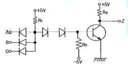
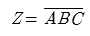
- Z=ABC
- Z=A+B+C
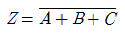
(정답률: 61%)
4. 저압전선로 중 절연 부분의 전선과 대지 사이의 절연저항은 사용전압에 대한 누설전류가 최대 공급전류의 얼마를 넘지 않도록 하여야 하는가?
- 1/1000
- 1/2000
- 1/10000
- 1/20000
(정답률: 88%)
5. 저압 인입선의 인입용으로 수직 배관시 비의 침입을 막는 금속관공사의 재료는 다음 중 어느 것인가?
- 유니버셜 캡
- 와이어 캡
- 엔트런스 캡
- 유니온 캡
(정답률: 93%)
6. 네온관용 전선 표기가 15kV N-EV 일 때 E는 무엇을 의미하는가?
- 네온전선
- 클로로프렌
- 비닐
- 폴리에틸렌
(정답률: 89%)
7. 논리식
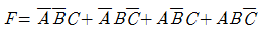
를 간소화 한것은?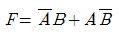
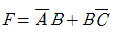
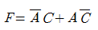
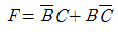
(정답률: 65%)
8. 누설 변압기의 가장 큰 특징은 어느 것인가?
- 역률이 좋다.
- 무부하손이 적다.
- 단락전류가 크다.
- 수하특성을 가진다.
(정답률: 77%)
9. 게르게스현상은 다음 중 어느 기기에서 일어나는가?
- 직류 직권전동기
- 단상 유도전동기
- 3상 농형 유도전동기
- 3상 권선형 유도전동기
(정답률: 61%)
10. 그림은 어떤 전력용 반도체의 특성 곡선인가?
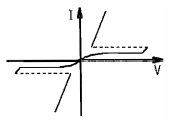
- SSS
- UJT
- FET
- GTO
(정답률: 81%)
11. 어떤 정현파 전압의 평균값이 153V이면 실효값은 약 몇 V인가?
- 240
- 191
- 170
- 153
(정답률: 60%)
12. 다음 중 바리스터(Varister)의 주된 용도는?
- 서지전압에 대한 회로 보호용
- 전압증폭용
- 출력전류 조정용
- 과전류방지 보호용
(정답률: 94%)
13.
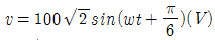
를 복소수로 표시하면?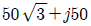
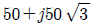
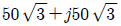
- 50+j50
(정답률: 67%)
14. 다음은 3상 전압형 인버터를 이용한 전동기 운전회로의 일부이다. 회로에서 트랜지스터의 기본적인 역할로 가장 적당한 것은?
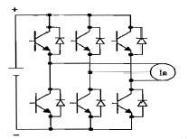
- 전압증폭
- ON·OFF
- 전류증폭
- 정류작용
(정답률: 80%)
15. 인터럽트(interrupt) 발생 시 수행되어 할 일이 아닌 것은?
- 수행중인 프로그램을 보조 기억장치에 보관한다.
- 프로그램 카운터의 내용을 보관한다.
- 인터럽트 처리 루틴을 수행한다.
- 어느 장치에서 인터럽트가 요청되었는지를 조사한다.
(정답률: 43%)
16. 풀용 수중조명등에 전기를 공급하기 위하여 1차측 120V, 2차측 30V의 절연 변압기를 사용하였다. 절연 변압기의 2차측 전로의 접지공사에 관한 내용으로 옳은 것은?
- 제1종 접지공사로 접지 한다.
- 제2종 접지공사로 접지 한다.
- 제3종 접지공사로 접지 한다.
- 접지를 하지 아니한다.
(정답률: 68%)
17. Boost 컨버터에서 입·출력 전압비
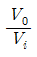
는? (단, D는 시비율(duty cycle)이다.)- D
- 1-D
- 1/1-D
- 1/D
(정답률: 87%)
18. 단상 유도전압조정기의 동작 원리 중 가장 적당한 것은?
- 교번자계의 전자유도 작용을 이용한다.
- 두 전류 사이에 작용하는 힘을 이용한다.
- 충전된 두 물체 사이에 작용하는 힘을 이용한다.
- 회전자계에 의한 유도작용을 이용하여 2차 전압의 위상 전압 조정에 따라 변화 한다.
(정답률: 69%)
19. 그림과 같은 회로에 입력 전압 220V를 가할 때 30Ω의 저항에 흐르는 전류는 몇 A인가?
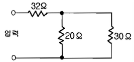
- 2
- 3
- 4
- 5
(정답률: 77%)
20. 마이크로프로세서에서 번지지정 방법 중 레지스터 간접번지 지정에 해당하는 명령의 표현인 것은?
- LD A, (HL)
- LD BC, (4455H)
- LD B,D
- JR Φ3H
(정답률: 48%)
2과목: 임의구분
21. 논리회로의 출력함수가 뜻하는 논리게이트의 명칭은?
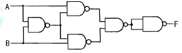
- EX-OR
- EX-NOR
- NOR
- NAND
(정답률: 65%)
22. 저압 옥상전선로를 전개된 장소에 시설하고자 할 때 다음 중 옳지 않은 것은?
- 전선은 조영재에 견고하게 붙인 지지대에 절연성·난연성 및 내수성이 있는 애자를 사용하여 지지하고 또한 그지지점 간의 거리는 15m 이하로 한다.
- 전선은 인장강도 2.3kN 이상의 것 또는 지름 2.6mm의 경동선을 사용한다.
- 전선과 그 저압 옥상 전선로를 시설하는 조영재와의 이격거리는 1.5m 이상으로 한다.
- 전선은 상시 부는 바람 등에 의하여 식물에 접촉하지 아니하도록 시설하여야 한다.
(정답률: 64%)
23. 3300V, 60㎐ 용 변압기의 와류손이 620W이다. 이 변압기를 2650V, 50㎐의 주파수에 사용할 때 와류손은 약몇 W인가?
- 500
- 400
- 312
- 210
(정답률: 58%)
24. 과전류 차단기로 저압전로에 사용하는 퓨즈를 수평으로 붙인 경우, 정격전류의 1.1배의 전류에 견디어야 한다. 퓨즈의 정격전류가 30A를 넘고 60A이하일 때 2배의 전류를 통한 경우 몇 분 이내로 용단되어야 하는가?
- 2분
- 4분
- 6분
- 8분
(정답률: 64%)
25. 다음 ( )안의 알맞은 내용으로 옳은 것은?
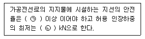
- ㉠ 2.0, ㉡ 3.81
- ㉠ 2.0, ㉡ 4.⑤
- ㉠ 2.5, ㉡ 4.31
- ㉠ 2.5, ㉡ 4.51
(정답률: 84%)
26. 저항정류의 역할을 하는 것은?
- 보상권선
- 보극
- 리액턴스 코일
- 탄소브러시
(정답률: 73%)
27. 정격전류가 60A인 3상 220V 전동기가 직접 전로에 접속되는 경우 전로의 전선은 약 몇 A이상의 허용전류를 갖는 것으로 하여야 하는가?
- 60
- 66
- 75
- 90
(정답률: 76%)
28. 변압기의 온도상승시험을 하는데 가장 좋은 방법은?
- 내전압법
- 실부하법
- 충격전압시험법
- 반환부하법
(정답률: 84%)
29. 직류용 직권전동기를 교류에 사용할 때 여러 가지 어려움이 발생되는데 다음 중 교류용 단상 직권전동기에서 강구할 대책으로 옳은 것은?
- 원통형 고정자를 사용한다.
- 계자권선의 권수를 크게 한다.
- 전기자 반작용을 적게 하기 위해 전기자 권수를 증가 시킨다.
- 브러시는 접촉저항이 적은 것을 사용한다.
(정답률: 63%)
30. 10진수 45를 2진수로 나타낸 것은?
- 101101
- 110010
- 110101
- 100110
(정답률: 74%)
31. 지중전선로 및 지중함의 시설방식 등의 기준에 대한 설명으로 옳지 않은 것은?
- 지중전선로는 전선에 케이블을 사용할 것
- 지중전선로는 관로식, 암거식 또는 직접매설식에 의하여 시설할 것
- 지중함 뚜껑은 시설자 이외의 자가 쉽게 열 수 없도록 시설할 것
- 폭발성 또는 연소성의 가스가 침입할 우려가 있는 곳에 시설하는 지중함으로서 그 크기가 0.5m2 이상인 것은 통풍 장치를 설치할 것
(정답률: 85%)
32. 유기기전력 110V, 단자전압 100V인 5kW 분권발전기의 계자저항이 50Ω 이라면 전기자저항은 약 몇 Ω인가?
- 0.12
- 0.19
- 0.96
- 1.92
(정답률: 51%)
33. 3상 유도전동기의 동기속도 Ns와 극수 P와의 관계는?
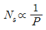
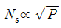
- Ns∝P
- Ns∝P2
(정답률: 76%)
34. 금속관 배선에서 관의 굴곡에 관한 사항이다. 금속관의 굴곡개소가 많은 경우에는 어떻게 하는 것이 가장 바람직한가?
- 행거를 30m 간격으로 견고하게 지지한다.
- 덕트를 설치한다.
- 풀박스를 설치한다.
- 링리듀서를 사용한다.
(정답률: 89%)
35. 평행한 콘덴서에서 전극의 반지름이 30㎝인 원판이고, 전극간격 0.1㎝이며 유전체의 비유전율은 4이다. 이 콘덴서의 정전용량은 몇 μF인가?
- 0.01
- 0.1
- 1
- 10
(정답률: 59%)
36. 2중 농형 유도전동기가 보통 농형 전동기에 비하여 다른 점은?
- 기동 전류가 크고, 기동 토크도 크다.
- 기동 전류는 크고, 기동 토크는 적다.
- 기동 전류가 적고, 기동 토크도 적다.
- 기동 전류는 적고, 기동 토크는 크다.
(정답률: 75%)
37. 다음 중 기록된 자료를 자외선을 쬐어서 지울 수 있고, 다시 새로운 자료를 써 넣을 수 있는 것은?
- ROM
- PROM
- EPROM
- EEPROM
(정답률: 53%)
38. 금속몰드공사에 의한 저압 옥내배선의 몰드에는 제 몇종 접지공사를 하여야 하는가?(관련 규정 개정전 문제로 여기서는 기존 정답인 3번을 누르면 정답 처리됩니다. 자세한 내용은 해설을 참고하세요.)
- 제1종 접지공사
- 제2종 접지공사
- 제3종 접지공사
- 특별 제3종 접지공사
(정답률: 88%)
39. PN 접합 다이오드에 공핍층이 생기는 경우는?
- 전압을 가하지 않을 때 생긴다.
- 다수 반송파가 많이 모여 있는 순간에 생긴다.
- 음(-)전압을 가할 때 생긴다.
- 전자와 정공의 확산에 의하여 생긴다.
(정답률: 82%)
40. 동기전동기는 유도전동기에 비하여 어떤 장점이 있는가?
- 기동특성이 양호하다.
- 속도를 자유롭게 제어할 수 있다.
- 구조가 간단하다.
- 역률을 1로 운전할 수 있다.
(정답률: 88%)
3과목: 임의구분
41. 래칭전류(Latching Current)를 올바르게 설명한 것은?
- 사이리스터를 온 상태로 스위칭 시킨 후의 애노드 순저지 전류
- 사이리스터를 턴-온 시키는데 필요한 최소의 양극 전류
- 사이리스터를 온 상태로 유지시키는데 필요한 게이트 전류
- 유지전류보다 조금 낮은 전류값
(정답률: 66%)
42. 다음 중 8086 마이크로프로세서의 세그먼트 레지스터가 아닌 것은?
- AS
- CS
- DS
- ES
(정답률: 47%)
43. 벅 컨버터(Buck Converter)에 대한 설명으로 옳지 않은 것은?
- 직류 입력전압 대비 직류 출력전압의 크기를 낮출 때 사용하는 직류-직류 컨버터이다.
- 입력전압(Vs)에 대한 출력전압 (Vo )의 비 (
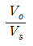
)는 스위칭 주기(T)에 대한 스위치 온(ON) 시간(ton)의 비인 듀티비(시비율)로 나타난다. - 벅 컨버터의 출력단에는 보통 직류성분은 통과시키고 교류성분을 차단하기 위한 LC저역통과 필터를 사용한다.
- 벅 컨버터는 일반적으로 고주파 트랜스포머(변압기)를 사용하는 절연형 컨버터이다.
(정답률: 57%)
44. 조상기의 내부고장이 생긴 경우 자동적으로 전로를 차단하는 장치를 설치하여야 하는 용량의 기준은?
- 15000 KVA 이상
- 20000 KVA 이상
- 30000 KVA 이상
- 50000 KVA 이상
(정답률: 78%)
45. 2.5mm2 전선 5본과, 4.0mm2 전선 3본을 동일한 금속전선관(후강)에 넣어 시공할 경우 관의 굵기의 호칭은? (단, 피복절연물을 포함한 전선의 단면적은 표와 같으며, 절연전선을 금속관 내에 넣을 경우의 보정계수는 2.0으로 한다.)
- 16
- 22
- 28
- 36
(정답률: 54%)
46. 1200lm의 광속을 갖는 전등 10개를 120m2의 사무실에 설치할 때 조명률이 0.5이고 감광보상률이 1.5이면 이사무실의 평균조도는 약 몇 lx인가?
- 7.5
- 15.2
- 33.3
- 66.6
(정답률: 75%)
47. 단면적 S(m2), 길이 l(m), 투자율 μ(H/m)의 자기회로에 N회의 코일을 감고 I(A)의 전류를 통할 때, 자기회로의 옴의 법칙을 옳게 표현한 것은?
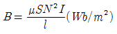
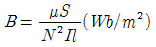
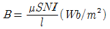
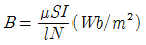
(정답률: 72%)
48. 다음 사이리스터 중 순방향 전압에서 양(+)의 전류에 의하여 턴-온 시킬 수 있고, 음(-)의 전류로 턴-오프 시킬수 있는 것은?
- GTO
- BJT
- UJT
- FET
(정답률: 92%)
49. 동기 발전기에서 부하가 갑자기 변화할 때 발전기의 회전 속도가 동기속도 부근에서 진동하는 현상을 무엇이라 하는가?
- 탈조
- 공조
- 난조
- 복조
(정답률: 88%)
50. 지중전선로 공사에서 케이블 포설시 케이블 끝단에 설치하여 당길 수 있도록 하는데 사용하는 것은?
- 풀링그립(Pulling Grip)
- 피시테이프(Fish Tape)
- 강철 인도선(Steel Wire)
- 와이어 로프(Eire Rope)
(정답률: 83%)
51. 모든 전기 장치에 접지시키는 근본적인 이유는?
- 지구는 전류를 잘 통하기 때문이다.
- 영상전하를 이용하기 때문이다.
- 편의상 지면을 영전위로 보기 때문이다.
- 지구의 정전용량이 커서 전위가 거의 일정하기 때문이다.
(정답률: 85%)
52. 전선의 접속법에서 두 개 이상의 전선을 병렬로 시설하여 사용하는 경우에 대한 사항으로 옳지 않은 것은?
- 병렬로 사용하는 각 전선의 굵기는 동선 50mm2 이상으로 하고, 전선은 같은 도체, 재료, 길이, 굵기의 것을 사용할 것
- 같은 극의 각 전선은 동일한 터미널러그에 완전히 접속할 것
- 병렬로 사용하는 전선에는 각각에 퓨즈를 설치할 것
- 교류회로에서 병렬로 사용하는 전선은 금속관 안에 전자적 불평형이 생기지 않도록 시설할 것
(정답률: 89%)
53. 콘덴서 기동형 단상 유도전동기의 설명으로 옳은 것은?
- 콘덴서를 주 권선에 직렬 연결한다.
- 콘덴서를 기동권선에 직렬 연결한다.
- 콘덴서를 기동권선에 병렬 연결한다.
- 콘덴서는 운전권선과 기동권선을 구별하지 않고 연결한다.
(정답률: 63%)
54. CISC(Complex Instruction Set Computer)의 특징으로 옳지 않은 것은?
- 명령어의 개수가 보통 100~250개로 많다.
- 주소 지정 방식은 5~20가지로 다양하다.
- 명령어들은 기억장치 내의 오퍼랜드를 처리한다.
- 명령어의 길이는 고정적이다.
(정답률: 49%)
55. 일정 통제를 할 때 1일당 그 작업을 단축하는데 소요되는 비용의 증가를 의미하는 것은?
- 정상소요시간(Normal duration time)
- 비용견적(Cost estimation)
- 비용구배(Cost slope)
- 총비용(Total cost)
(정답률: 83%)
56. 그림의 OC곡선을 보고 가장 올바른 내용을 나타낸 것은?
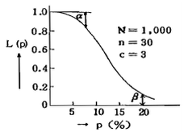
- α : 소비자 위험
- L(P) : 로트가 합격할 확률
- β : 생산자 위험
- 부적합품률 : 0.03
(정답률: 80%)
57. np 관리도에서 시료군 마다 시료수(n)는 100이고, 시료군의 수(k)는 20,
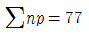
이다. 이 때 np관리도의 관리상한선(UCL)을 구하면 약 얼마인가?- 8.94
- 3.85
- 5.77
- 9.62
(정답률: 34%)
58. 다음 중 단속생산 시스템과 비교한 연속생산 시스템의 특징으로 옳은 것은?
- 단위당 생산원가가 낮다.
- 다품종 소량생산에 적합하다.
- 생산방식은 주문생산방식이다.
- 생산설비는 범용설비를 사용한다.
(정답률: 78%)
59. 미국의 마틴 마리에타사(Martin Marietta Corp)에서 시작된 품질개선을 위한 동기부여 프로그램으로, 모든 작업자가 무결점을 목표로 설정하고, 처음부터 작업을 올바르게 수행함으로써 품질비용을 줄이기 위한 프로그램은 무엇인가?
- TPM 활동
- 6시그마 운동
- ZD 운동
- ISO 9001 인증
(정답률: 89%)
60. MTM(Method Time Measurement)법에서 사용되는1TMU(Time Measurement Unit)는 몇 시간인가?
- 1/100000시간
- 1/10000시간
- 6/10000시간
- 36/1000시간
(정답률: 83%)